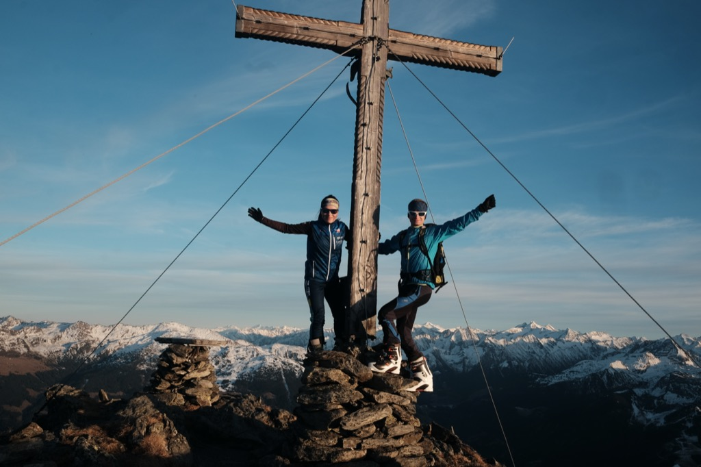
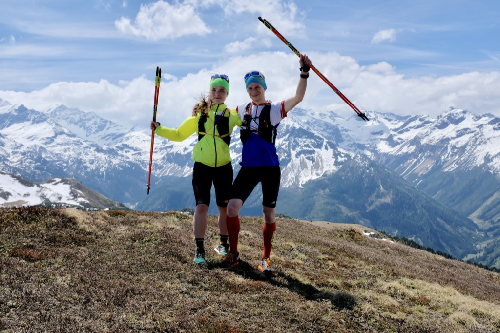
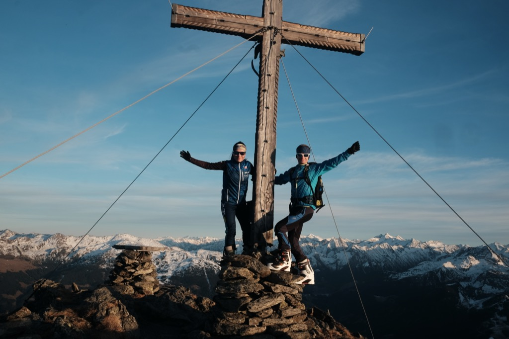
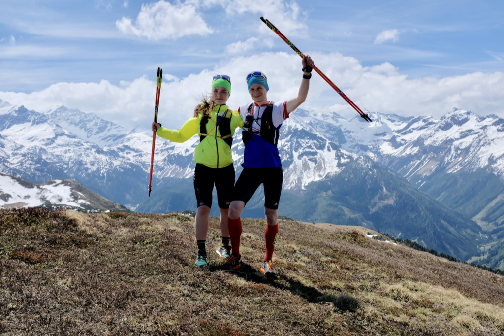
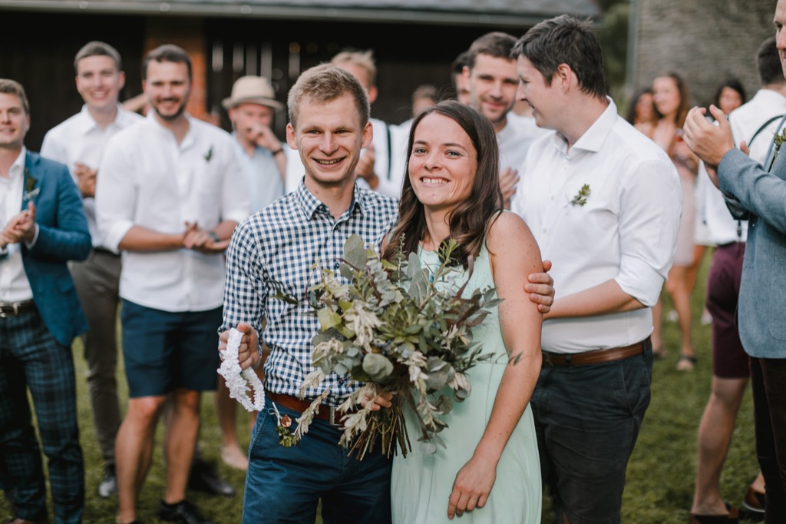
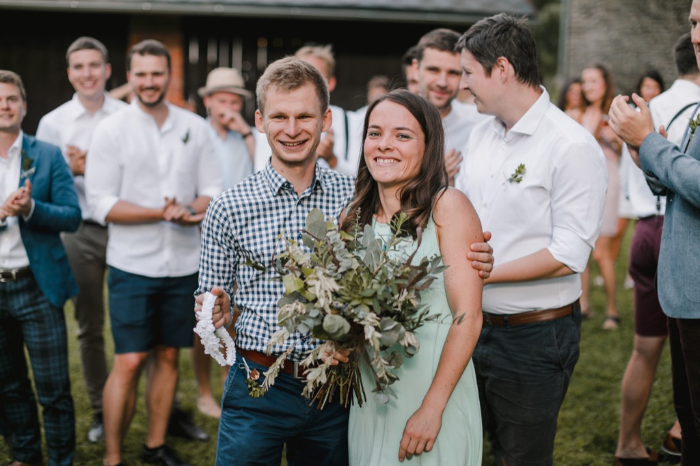

Program
Čtvrtek 30. dubna
Večer už můžeš přijet. Společný program začíná v pátek, ale ubytování už bude k dispozici.
Pátek 1. května (státní svátek)
Odpoledne příjezd a přípravy. Dle počasí plánujeme společnou vycházku či výlet. Obtížnost bude na míru účastníkům.
Večer večeře pro všechny na Bednářově statku.
Sobota 2. května
Ráno snídaně pro všechny na Bednářově statku.
12:30 svatební obřad v kostele sv. Matouše.
Odpoledne raut a další radovánky na Bednářově statku.
Neděle 3. května
Ráno dojíme zbytky a odjíždíme.
Pozvali jsme tě?
Nemusíš se o nic starat, stačí dorazit.
Zajistíme:
- Rezervaci ubytování
- Jídlo a pití na celou akci
- Společnou dopravu ke kostelu a zpět na párty
Abychom mohli rezervovat dostatek ubytování v nejbližším okolí a zajistit dostatek jídla, dej nám prosím už teď vědět s kým, kdy a jak dorazíš.
Odpovědět na pozvánku 



 

Další informace
Kdy že to bude?
Akce začíná v pátek 1. května (státní svátek). Obřad proběhne v sobotu 2. května ve 12:30. Uložit do kalendáře
Kde se bude spát?
Zhruba pro 30 lidí bude místo přímo na Bednářově statku. Především pro ty, kteří budou pomáhat s přípravami nebo mají malé děti.
Pro zbytek zamluvíme ubytování v blízkém penzionu.
Kdo bude chtít, může spát ve stanu u Bednářova statku nebo v Mladkově. Postel nebo místo na zemi se tam najde vždy.
Pro co nejsnazší organizaci budeme rádi, když si ubytování objednáš přes nás. Dáme ti pak vědět cenu a rezervujeme pokoj.
Čím vám ještě udělám radost?
- Pokud co nejdříve vyplníš dotazník pro účastníky.
- Pokud necháš auto doma a přijedeš vlakem nebo jiným prostředkem hromadné dopravy. Rádi tě dopravíme z/na nádraží.
- Pokud spolu s námi během akce omezíš odpad na minimum.
- Pokud přijedeš už v pátek a přidáš se na vycházku.
Co si mám obléci?
Vem si cokoliv, v čem ti bude přijemně ve své oblíbené barvě. Oblek i jiné přehnaně formální oblečení můžeš nechat doma. Část odpolední zábavy a rautu bude ve velkém party stanu, tak mysli na to, ať ti není chladno.
Nezapomeň, že budeme v horách. Může pršet, sněžit, foukat, ale taky může být vedro. Počítej s tím a vezmi si vhodné oblečení a obuv. Přibal i něco na vycházku do přírody.
Kde přesně to bude?
Všechno jídlo, zábava a ubytování pro některé bude na Bednářově statku v Klášterci nad Orlicí ukázat na mapě
Obřad bude v kostele sv. Matouše v Deštném v Orlických horách ukázat na mapě
Co budu jíst?
Jídlo zajistíme pro všechny a to od pátečního večera do nedělního rána. Jen nám dej včas vědět kdy dorazíš, ať správně naplánujeme množství.
Co (ne)mám přinést?
Prosíme, nenos žádné dary. Nenos ani přání. Určitě nekupuj něco náhodného v papírnictví, ale osobní vzkaz nám radost vždy udělá. Na místě bude nádoba, do které ho budeš moci vhodit. Nepotřebuješ tedy ani obálku.
Pokud chceš, přines finanční dar, který si můžeš dovolit. Zaplatíme z něj část nákladů na svatbu a polovinu ze všech vybraných peněz věnujeme útulku Tibet, který vede Barčin kamarád z veteriny se svou ženou. Starají se hlavně o hendikepovaná a stará zvířata. Kromě mnoha psů a koček dávají domov například třínohé srnce nebo slepému telátku. S financemi dlouhodobě bojují.
Na finanční dary bude k dispozici kasička. Takže ani tady není obálka potřebná.
To je opravdu všechno. Kdo nás dobře zná, ví, že se snažíme věci v životě omezovat a nevytvářet nový odpad. Už teď máme věcí nad hlavu a největším dárkem pro nás bude čas strávený společně s vámi.